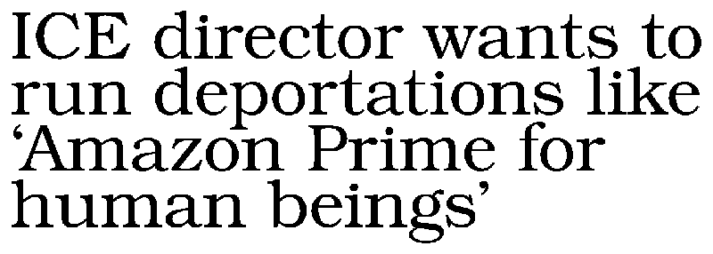

The government or control of society or industry by an elite of technical experts.
Today, you're either above the API or below the API. You either tell robots what to do, or are told by robots what to do. Science is hated because its mastery requires too much hard work, and, by the same token, its practitioners, the scientists, are hated because of their power they derive from it.~
The end of work is the upcoming abstraction and machine automation of mostly all that is currently understood as work. Inside capitalism, the critical moment is specifically where technology meets capital: who gets to own this capital; the "factory without the worker".
The end of work, or the end of jobs, is an immediate reality. For most, who are currently subsisting through participation in the wage labour system, this is also end of getting paid and able to "not die". The idea that for every job at the bottom closed by technology, there's one opening at the top is ridiculous.
To a neocameralist, a state is a business which owns a country, dividing logical ownership into negotiable shares, each of which yields a precise fraction of the state's profit.


The state did not appreciate the journeymen's associations' tendency to strike, nor their ability to move as they pleased when work conditions were unfavorable. The state's response was to take over the management of the construction sites, merging all the divisions of labor together in the supreme distinction between the intellectual and the manual, the theoretical and the practical.

By separating intellectual and physical labor the state took power away from both types of workers. The manual laborers could then only build what others had planned and the planners no longer had the capacity to build anything at all.
Manufacturing Scarcity
People have a native capacity for healing, consoling, moving, learning, building their houses, and burying their dead. Each of these capacities meets a need. The means for the satisfaction of these needs are abundant so long as they depend primarily on what people can do for themselves, with only marginal dependence on commodities.
These basic satisfactions become scarce when the social environment is transformed in such a manner that basic needs can no longer be met by abundant competence. The establishment of radical monopoly happens when people give up their native ability to do what they can do for themselves and for each other, in exchange for something "better" that can be done for them only by a major tool.
Once men turned their thinking over to machines in the hope that this would set them free. But that only permitted other men with machines to enslave them.Frank Herbert, 1966.

Lauderdale pointed out that the only way to increase private riches was to reduce what he called public wealth, or the commons. To enclose things that were once free so that people have to pay in order to access them. To illustrate, he noted that colonialists would often even burn down trees that produced nuts and fruits so that local inhabitants wouldn't be able to live off of the natural abundance of the earth, but would be forced to work for wages in order to feed themselves.
As a first step, new standards were set for the construction of dwelling units. These standards were intended to protect the person who purchases a house, from exploitation by the industry producing it. Paradoxically, these same standards deprived many more people of the traditional opportunity to house themselves.

Suffering and tragedy and folly will not disappear in a purified world.
technocracy
- Sybil attack: An attacker subverts the reputation system of a P2P network by creating a large number of pseudonymous identities and uses them to gain a disproportionately large influence.
- Siren Servers: Instead of paying each individual for their contribution to the data pool, the server concentrate wealth in the hands of the few who control the data center. Alluding to the Sirens of Ulysses.
- Paradox of tolerance: States that if a society is tolerant without limit, its ability to be tolerant is eventually seized or destroyed by the intolerant.
- The Veil Of Ignorance: Behind this veil, you know nothing of yourself and your natural abilities, position in society, sex, race, nationality, or individual tastes. All individuals are simply specified as rational, free, and morally equal beings.
- Behavioral sink: A term used to describe the collapse in behavior(stress, alienation, hostility, sexual perversion, parental incompetence, and rabid violence) which resulted from overcrowdedness in an experiment on mice, drawing parallels with societal collapse found in the human Megalopolis.
- Dunbar's Number: A suggested cognitive limit of 150, to the number of people with whom one can maintain stable social relationships.
- Kessler syndrome: A theoretical scenario in which the density of objects in low Earth orbit due to space pollution is high enough that collisions between objects could cause a cascade in which each collision generates space debris that increases the likelihood of further collisions.
- Consumer farming: The expansionistic practice of looking for new customers to increase sales.
- Jevons paradox: Occurs when technological progress or policy increases the efficiency with which a resource is used, reducing the amount necessary for any one use, but the rate of consumption of that resource rises due to increasing demand.
- The Iron Triangle: Entrapping interdependence relationships between a house (because you need a place to live), a job (because you need to pay for the house) and a car (because you need to be able to commute to the job).
- Procrustean: Describes situations where an arbitrary standard is used to measure success, while completely disregarding obvious harm that results from the effort.
They constantly try to escapeT.S. Eliot, The Rock
From the darkness outside and within
By dreaming of systems so perfect that no one will need to be good.
But the man that is will shadow
The man that pretends to be.

He drops water onto hordes of irradiated wastrels like a Roman emperor showering plebs with bread and circuses. "Do not become addicted to water," he cautions them.
Preservation of the sick life of medically dependent people in an unhealthy environment became the principal business of the medical profession. Natural immunity, and traditional culture could not cope. On a world-wide scale, medical care concentrated on breeding a human stock that was fit only for domesticated life within an increasingly more costly, man-made, scientifically controlled environment.

Hospital-born, formula-fed, antibiotic-stuffed children thus grow into adults who can breathe the air, eat the food, and survive the lifelessness of a modern city, who will breed and raise at almost any cost a generation even more dependent on medicine.
There is an underlying apprehension that technology has failed so far to make our lives positively rich and that it is not a matter of continuing the enrichment through technology but of first ushering it in. The fear that the positive and shining goal of technology has after two centuries of gigantic efforts remained distant and may even slip from sight lends a note of urgency if not panic to the pronouncements of those who urge that we continue to promote technology.

In the end, the market proved both views right braindance became an everyday product, another form of entertainment, but also a new form of surveillance.
incoming: sabotage technology simulacra commodity